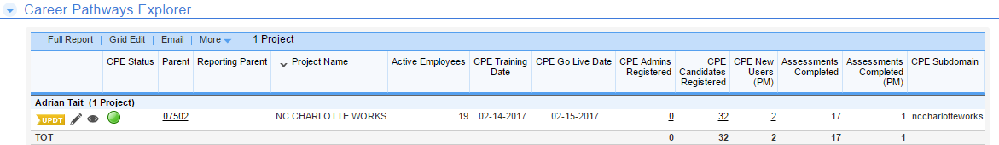

Career Pathways Explorer
This will show how your Staff and Job Seekers are using this tool
Our online personality assessment that helps job seekers match their personality traits to a career pathway through a short series images to which job seekers respond “me” or “not me.” Each image measures multiple personality traits, and multiple images allow for similar personality concepts to be retested and affirmed. Upon completion, the job seeker personality type is identified through scores, Top Two Personality Blend, traits, blend complements, and more.

Created with the Personal Edition of HelpNDoc: Free iPhone documentation generator